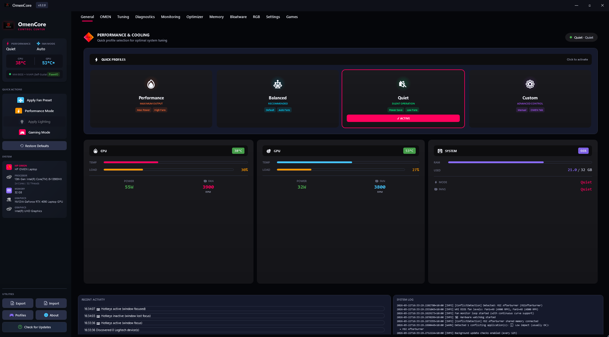

Take full control of your HP OMEN & Victus laptop
OmenCore is a free, open-source replacement for OMEN Gaming Hub — fan curves, performance modes, multi-brand RGB, undervolting, and live monitoring, running 100% locally with no ads, accounts, or telemetry by default.

Everything OMEN Gaming Hub does — and a lot it doesn't
Thermal management, performance tuning, RGB lighting, monitoring, and system cleanup, all in one lightweight app.
Thermal Management
Independent CPU/GPU fan curves, Max/Auto/Silent presets, hysteresis smoothing, and a configurable thermal emergency override.
Performance Tuning
Quiet, Balanced, Performance, and custom profiles with instant switching, GPU power boost, and Intel/AMD undervolting.
Multi-Brand RGB
HP OMEN keyboard zones plus Corsair, Logitech, and Razer device integration from a single unified panel.
Live Monitoring
CPU/GPU temperature, load, clocks, fan RPM, and power draw sampled from WMI BIOS, NVAPI, and EC — not a kernel driver.
Memory Optimizer
Smart and Deep Clean modes, working-set trimming, standby memory purge, and configurable auto-clean thresholds.
System Optimizer
One-click Windows gaming tuning — power plans, background services, network settings, and startup apps, with registry backup.
Diagnostics
Guided fan diagnostics, sensor health checks, and a one-click exportable bundle for support or bug reports.
Game Profiles
Automatic per-game fan/performance/lighting profiles with window-title disambiguation and multi-game restore handling.
Battery & Power
AC/battery-aware profile switching, an 80% charge limiter, TCC offset control, and settings that persist across reboots.
OSD & Tray
Click-through overlay, hotkey toasts, a quick-access popup, and live tray status — reach Max Fan in a single click.
Linux Support
A full Avalonia GUI and CLI with an automatic fan-control daemon and TOML configuration — feature parity with Windows.
Privacy First
Telemetry is opt-in and local-only when enabled — no account, no ads, no cloud dependency, ever.
OmenCore vs. OMEN Gaming Hub
Same hardware, a lot less overhead.
| Feature | OmenCore | OMEN Gaming Hub |
|---|---|---|
| Background services | ✓ None | 3–5 services |
| Telemetry & data collection | ✓ Opt-in, local only | Always active |
| Independent CPU/GPU fan curves | ✓ Yes | ✕ No |
| Memory optimizer | ✓ Built-in | ✕ No |
| MSI Afterburner coexistence | ✓ Yes | Conflicts |
| Multi-brand RGB support | ✓ Corsair, Logitech, Razer | HP only |
| Linux support | ✓ GUI + CLI | ✕ No |
| System optimizer | ✓ One-click | ✕ No |
| Source code | ✓ Open (MIT) | Closed |
Built for Windows, at home on Linux too
The same control surface, tuned for each platform's conventions.
Windows 10 / 11
The full WPF desktop app — every feature above, self-contained with an embedded .NET runtime.
- Installer or portable ZIP — no separate .NET install required
- Auto-detects your model's capabilities on first launch
- Runs elevated for direct EC/WMI hardware access
Linux
A native Avalonia GUI plus a CLI and systemd daemon, for the same fan/thermal control headless or on the desktop.
-
omencore-guiandomencore-cli, self-contained builds - Automatic fan-control daemon with TOML config
- hp-wmi / ec_sys / sysfs backed, no proprietary drivers
Get OmenCore
Free and open source. Requires a 2022+ HP OMEN or Victus laptop. Windows builds run elevated for direct hardware access.
# then run the CLI daemon or the omencore-gui binary directly.
# Full steps: docs/LINUX_INSTALL_GUIDE.md
- No account or sign-in required
- No OMEN Gaming Hub dependency
- Unsigned binaries today — see the AV/SmartScreen FAQ before you install
- Every release is SHA256-verified and built from this public source
Actively developed, in the open
Every change is documented — no vague "bug fixes and improvements."
A sustainability-focused cycle: privilege-separation groundwork, a community-contributable model database, first-run capability disclosure, accessibility passes, and a running audit of tech debt — tracked live on the public roadmap.
View the 4.0.0 roadmap →UX-and-reliability focused — no fan/thermal/EC control behavior changes, just fixing day-to-day friction.
- Fixed a completely non-functional OMEN key action setting
- Fixed game profiles that could be lost on a crash before saving
- Fixed several previously-silent EC reset and crash-report failure paths
- Low-contrast tray icon and new model support additions
A same-day critical-hang fix: a named-pipe desync between the app and its out-of-process hardware worker could freeze and force-close OmenCore within seconds of launch on affected boards.
Full v3.8.2 changelog →A broad field-driven release covering model-specific fan fixes, GUI/accessibility polish, diagnostics clarity, and runtime optimization across multiple OMEN and Victus boards.
Full v3.8.0 changelog →Field-driven, not boardroom-driven
Model support and fixes come from real hardware reports, tracked in the open.
Discord
Report hardware quirks, request model support, and talk to the maintainer directly — most fixes in this project start here.
Join the DiscordGitHub Issues
Found a bug or missing model? Open an issue with a diagnostics export — the built-in exporter does most of the work for you.
Open an issueModel Database
Submit a schema-validated capability entry for your laptop instead of waiting on a hand-written one — a validator checks the shape before review.
Contribute your modelSupport independent development
OmenCore is free, open source, and has no paid tier, no ads, and no data to sell — it's built and maintained in spare time, driven by field reports rather than a roadmap set by HP. If it's saved you from OMEN Gaming Hub, a donation helps keep it that way.
100% optional. No feature is ever paywalled — donations just support hosting and development time.